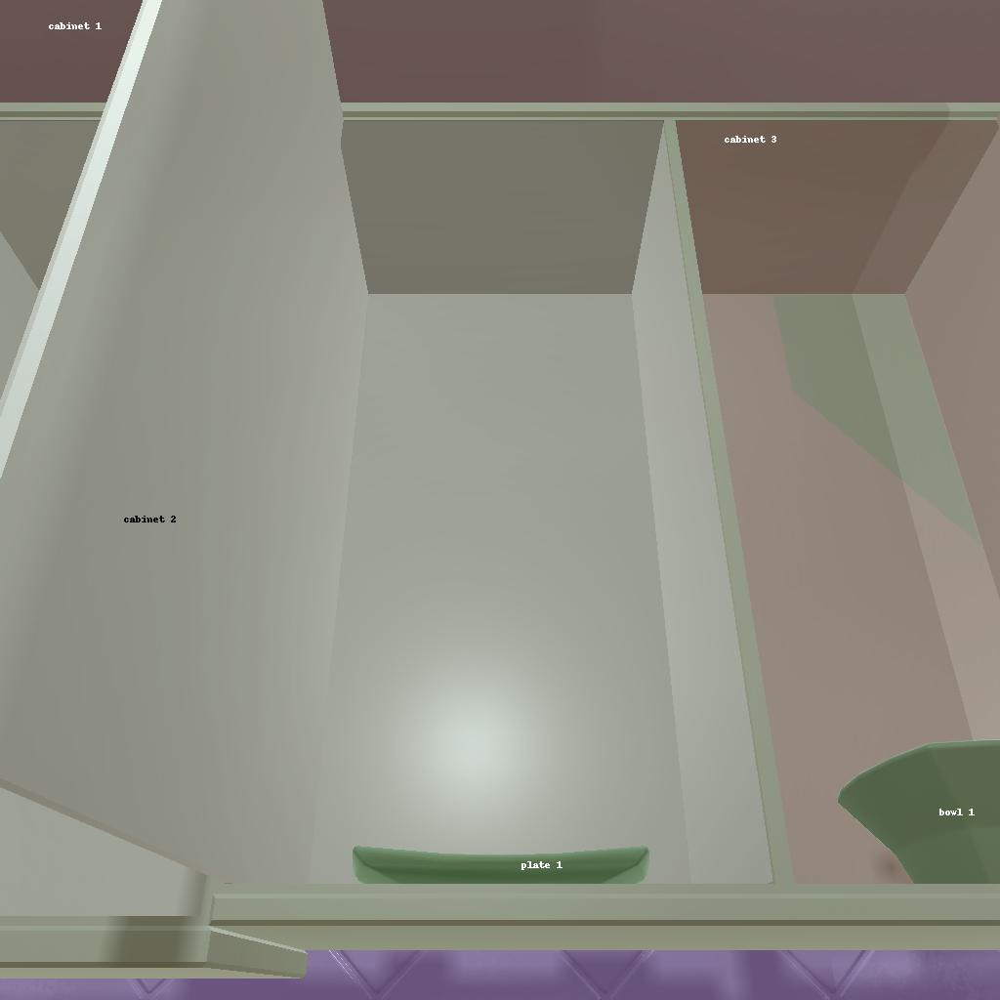

---------------------------------------------------------task: 21---------------------------------------------------------
--------------------------------------------------------------------------------------------------------------------------------------------------------------------
--------------------------------------------------------------------------------------------------------------------------------------------------------------------
Step:--------------------------------------------------------------------------17-------------------------------------------------------------------------------
----------------------------------------
VLM Prompt:
Image1:
Image2:
Image3:
**Instruction**
1. Analyze the provided image to identify all visible household objects, focusing on those relevant to the task description "heat some cup and put it in countertop."
2. Use the analysis of the image and the task hint "The agent must find an object of the desired type, pick it up, go to a microwave, heat the object with the microwave, then find the correct location to place it, and put it down there. The agent does not need to use the microwave button or open the microwave to heat the object, and the agent just needs to do action that is "heat the object with the microwave"." to answer the question: what is the most reasonable action in the choices for the task description "heat some cup and put it in countertop"?
4. Decide and write the answer using the template: The answer is: (i): , where i is the real number. If there is no desired object in the image, search every place based on **Initial Observation** to find the object. And if no one is exactly correct, choose a similar answer.
**Initial Observation**
You are in the middle of a room. Looking quickly around you, you can see cabinet (1-6), microwave (1), countertop (1-2), coffeemachine (1), toaster (1), sink (1), sinkbasin (1), fridge (1)
**Answer Choices**
(1): go to cabinet 1
(2): go to microwave 1
(3): go to cabinet 5
(4): go to cabinet 6
(5): go to countertop 1
(6): go to coffeemachine 1
(7): go to toaster 1
(8): go to countertop 2
(9): go to sink 1
(10): go to sinkbasin 1
(11): go to fridge 1
(12): open cabinet 4
(13): close cabinet 4
(14): take saltshaker 1 from cabinet 4
(15): examine cabinet 4
**Answer**
Let's think step by step by following the instructions.
----------------------------------------
----------------------------------------
Original Response:
First, analyze the images to find a cup. Image1 and Image2 show cabinet 1, cabinet 2, cabinet 3, plate 1, and bowl 1. There is no cup visible in these images. Image3 shows cabinet 4, cabinet 5, a saltshaker, and a microwave. There is no cup visible in this image either.
Since the task is to "heat some cup and put it in countertop," we need to find a cup. The initial observation mentions that you can see cabinet (1-6), so the next logical step would be to search the cabinets that haven't been shown in the provided images (cabinet 6).
The answer is: (4): go to cabinet 6.
----------------------------------------
----------------------------------------
>>> Refine Original VLM Response and Get Pure Action: go to cabinet 6
----------------------------------------
-----------------------------------------------------------------
Running time: 265.88267707824707 seconds
Total Money: 13.727240000000005
-----------------------------------------------------------------
-----------------------------------------------------------------
Text Observation:You arrive at loc 6. The cabinet 6 is closed.
-----------------------------------------------------------------
UNSUCCEED